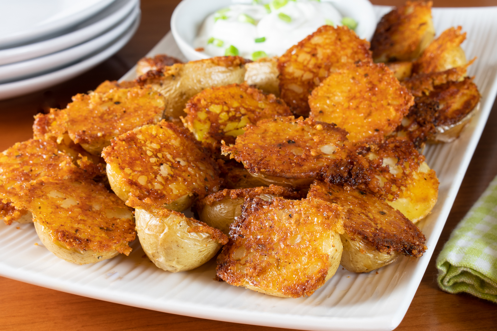

Crispy Roasted Parmesan Potatoes

Description
Just a fleeting glance at these Crispy Roasted Parmesan Potatoes is all you need to KNOW that these are utterly addictive and that you’ll be fighting to make sure you get your fair share.
Just look at them! Soft on the inside….. Golden crispy parmesan crusted on the outside, loaded with ridiculous flavour not just from the parmesan, but from a touch of seasoning too….
Ingredients
- 750 g / 1.5 lb baby potatoes , halved (about 3.5cm / 1.75", 20 - 24 potatoes)
- 2 tbsp olive oil , plus more for drizzling
Parmesan Mixture:
- 1/2 cup / 50 g grated parmesan , the sand-like type (Note 1)
- 1/2 tsp garlic powder (or sub with onion powder)
- 1/2 tsp dried oregano or thyme
- 1/2 tsp paprika
- 1/4 tsp salt (I use table salt, leave out to lower sodium)
- 1/2 tsp black pepper
Dipping Sauce (Optional):
- 3/4 cup sour cream, or sub with plain yoghurt , or a combination of both
- 1/4 cup finely chopped green onions/scallions , plus more for garnish (or chives)
Steps
- Preheat oven to 200C/400F.
- Mix Parmesan Mixture in a bowl.
- Drizzle oil in 22 x 33cm / 9 x 13" glass baking dish (Note 2). Tilt pan to spread all over the base.
- Use a spoon to scatter the Parmesan Mixture over the base. Spread as evenly as you can. Once sprinkled, do not touch - don't try to spread it.
- Place potatoes cut side down, pressing firmly.
- Optional: drizzle top of potatoes with a touch of oil or spray with oil, then sprinkle with salt.
- Bake potatoes for 35 - 40 minutes or until they are soft and the parmesan crust is deep golden (you can check through the glass!)
- REST for 5 minutes. Then use an egg flip to cut between every 4 or so potatoes (i.e. cutting through the parmesan crust which bonds between each potato - see video), then scoop up 4 or so potatoes and flip them upside down so the cheese side is up on a serving platter.
- Serve with Dipping Sauce, if using, and sprinkle over extra green onions if desired. Serve as a side dish or as nibbles!